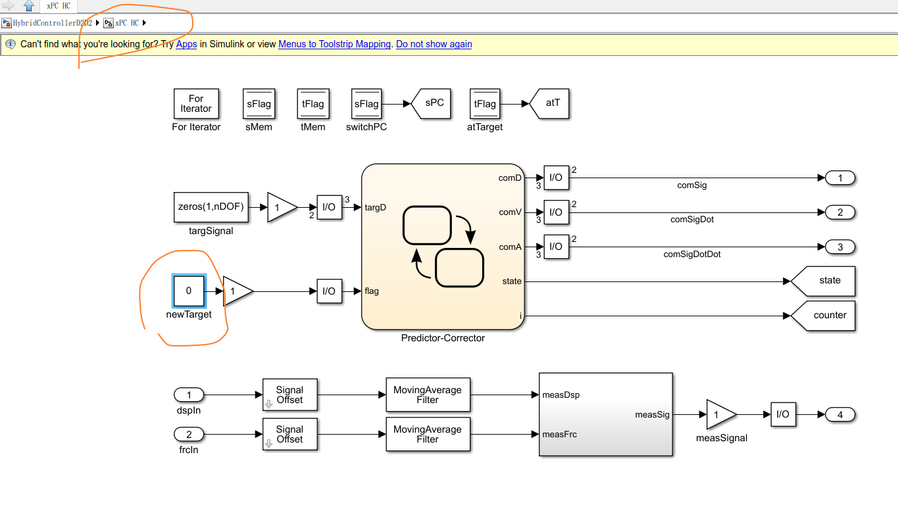
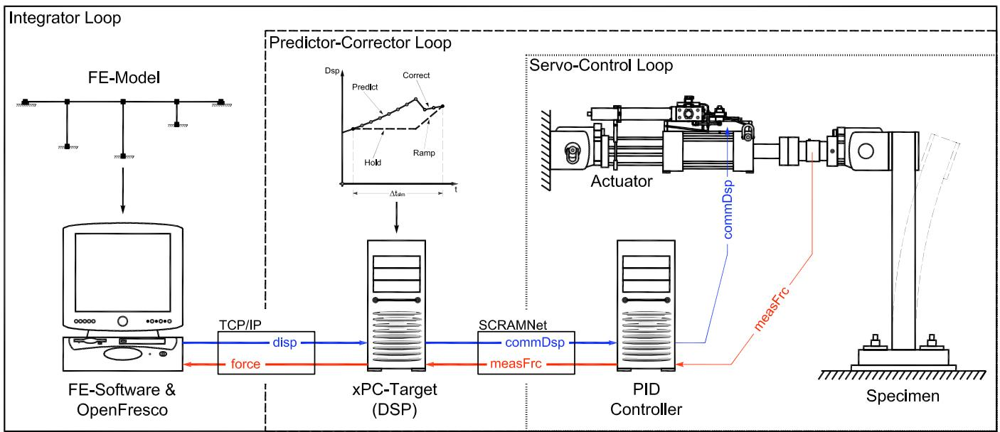

2.9. xPCtarget 实验控制
2.9.1. 命令
此命令用于构建 xPCtarget 实验控制对象(支持到matlab 2020a)。在该实时系统中，目标 PC 通过以太网连接从主机 PC 访问。xPC-Target 数字信号处理器作为主机 PC 与控制器之间的链路。它以实时方式运行 Simulink 预测-校正模型。 与simulink通信方式是通过xpcapi读取simulink的文件中的变量读写数据。具体代码实现如下：
newTargetId = xPCGetParamIdx(port, "xPC HC/newTarget", "Value");
switchPCId = xPCGetSignalIdx(port, "xPC HC/switchPC");
atTargetId = xPCGetSignalIdx(port, "xPC HC/atTarget");
ctrlSignalId = xPCGetParamIdx(port, "xPC HC/targSignal", "Value");
对应的simulink模型如下：
{kind=link}

图 2.7 xpc 的simulink模型
expControl xPCtarget tag ipAddr ipPort appFile -trialCP cpTags -outCP cpTags <-timeOut t> <-ctrlFilters (5 $filterTag)> <-daqFilters (5 $filterTag)>
$tag |
唯一控制标签 |
ipAddr |
xPC-Target 的 IP 地址 |
$ipPort |
xPC-Target 的 IP 端口 |
appName |
要加载的 Simulink 应用程序路径和名称（不含 .dlm 扩展名） |
$cpTags |
先前定义的控制点标签 |
$filterTag |
先前定义的滤波器标签标识；滤波器标签标识大小为 5（条目：[位移, 速度, 加速度, 力, 时间][disp, vel, accel, force, time]） |
注：* appName 最好使用引号括起来，尤其是当路径名中包含空格时；路径名中应使用正斜杠。
2.9.2. 示例
expControl xPCtarget 1 "10.10.10.100" 22222 "C:/Users/Andreas/Documents/OpenFresco/SourceCode/SRC/experimentalControl/Simulink/RTActualTestModels/cmAPI-xPCTarget-SCRAMNetGT-MTS_STS/HybridControllerD2D2sim" -trialCP 1 -outCP 2
上述示例命令使用名为 HybridControllerD2D2sim.slx 的 Simulink 模型，该模型利用位移进行预测和校正。它与 IP 地址为 192.168.2.20、端口为 22222 的 xPC-Target 机器通信。Simulink 模型的路径为C:/Users/Andreas/Documents/OpenFresco/SourceCode/SRC/experimentalControl/Simulink/RTActualTestModels/cmAPI-xPCTarget-SCRAMNetGT-MTS_STS/。
{kind=link}

图 2.8 xPCtarget 实验控制
2.9.3. 记录Recorder
在创建 ExpControlRecorder 对象时，对 xPCtarget 实验控制的有效查询包括（代码setResponse部分）：
控制（命令）信号：ctrlSig, ctrlSignal, ctrlSignals
数据采集（反馈）信号：daqSig, daqSignal, daqSignals